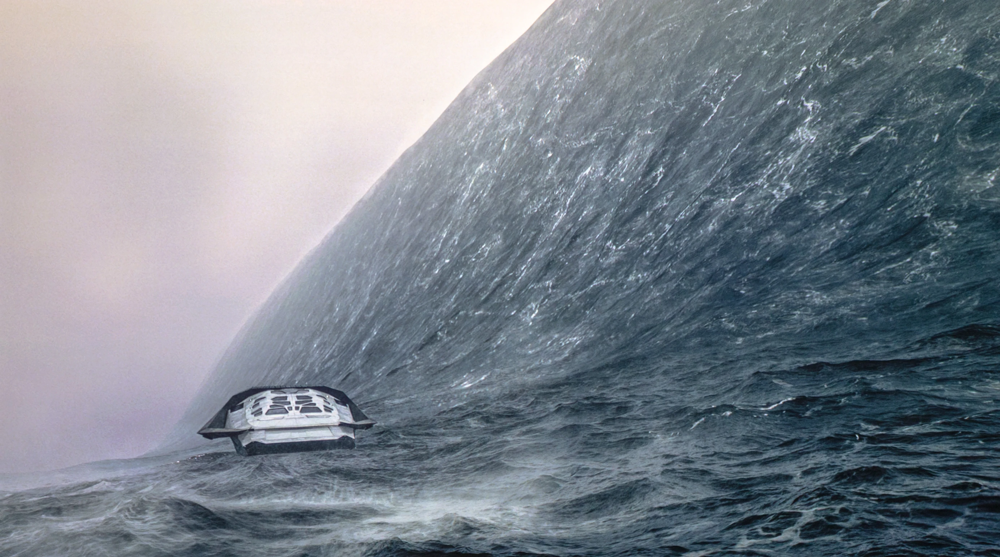
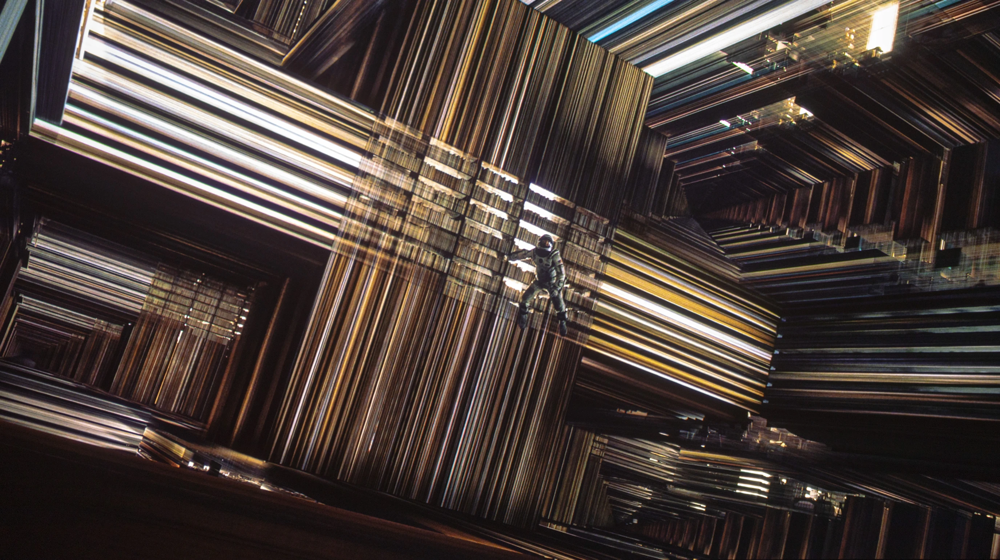
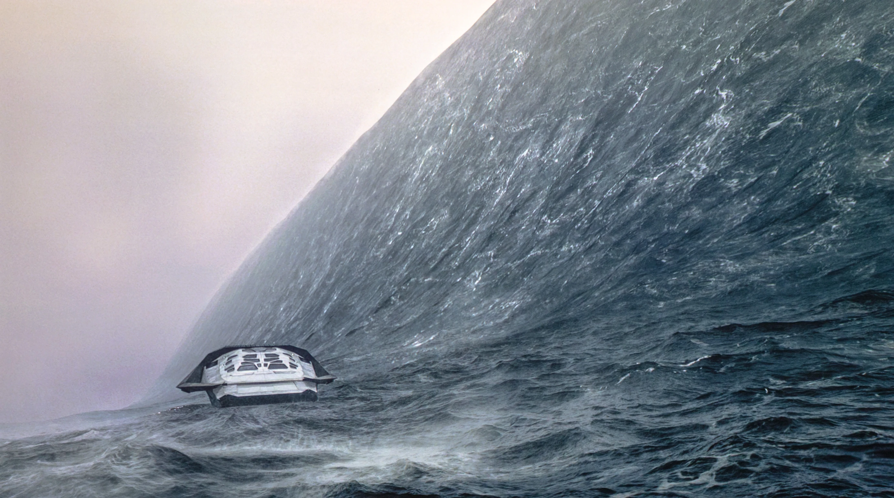
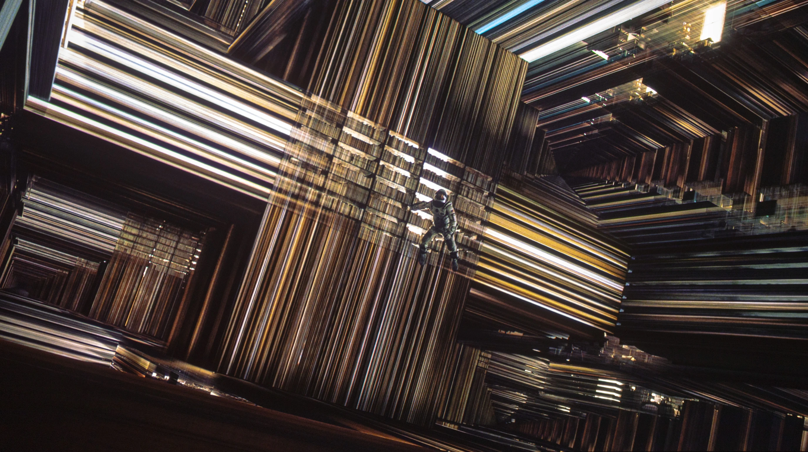

Interstellar is a visually stunning sci-fi epic directed by Christopher Nolan that explores the boundaries of space, time, and human survival. The film follows Cooper (Matthew McConaughey), a former pilot turned farmer, who is recruited for a mission to find a new habitable planet for humanity. As Earth faces environmental collapse, Cooper and his team travel through a wormhole to distant galaxies, encountering strange phenomena, perilous challenges, and the question of what it means to sacrifice for the future. With breathtaking visuals, emotional depth, and mind-bending concepts about time and love, Interstellar takes audiences on a journey that stretches the limits of imagination and explores the enduring connection between parent and child.


 


